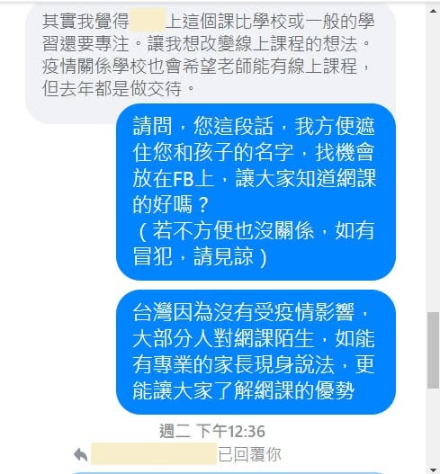

感謝家長對AMC10網課的肯定和分享
目前獵豹數學正在進行 AMC10深水區課程，參與的孩子大部分都是經由我社團這邊報名，剛好近日一位和我私訊的家長，本身是學校數學老師，孩子是國中生，有參與 AMC10深水區網課，我和他聊了孩子參與課程的感覺，很高興得到同為數學老師的家長對 AMC10深水區網課的肯定，甚至對網課有了不一樣的看法，徵求他的同意，也與大家分享。
我知道大部分孩子都沒有網課的經驗，但其實正如宗翰老師所說，對於資優生來說，網課不只是更省時間，其實學習更有效率，也更容易專注。很感謝老師把網課的模式帶來我的社團，也同時解決了許多家長和我反應的，在自己家裡附近找不到適合孩子提升自己程度的方式，希望我的社團讓在各地的孩子都能有同樣的機會接觸好的學習方式，和夠深度的課程，打破地區限制，讓更多想學習的孩子受益！
https://www.facebook.com/groups/695697124716309/permalink/737475733871781/
